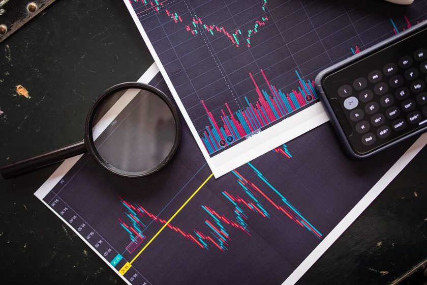

Reserva de emergencia do zero: quanto guardar e onde deixar
Todo mundo tem um plano financeiro perfeito na cabeca — ate o carro quebrar, o dente doer ou a rescisao chegar sem aviso. E nessas horas que a diferenca entre quem dorme tranquilo e quem cai no cheque especial se resume a uma unica coisa: ter, ou nao, uma reserva de emergencia. Ela nao rende historias de milionario, nao aparece em foto de rede social, mas e o alicerce silencioso de qualquer vida financeira que se sustenta em pe.
Neste guia a gente vai do zero: o que e a reserva, por que ela vem antes de qualquer investimento, quanto voce precisa juntar, onde deixar esse dinheiro e como comecar mesmo que sobre pouco no fim do mes.
O que e e por que vem antes de investir
A reserva de emergencia e um dinheiro guardado com um proposito unico: cobrir imprevistos que nao dava pra prever nem adiar. Perda de renda, uma consulta medica urgente, o eletrodomestico que pifou, o conserto do carro que voce depende pra trabalhar. Nao e o dinheiro da viagem, nem o da troca de celular — isso e objetivo, e tem outra prateleira.
Muita gente quer pular essa etapa e ir direto para acoes, criptomoedas ou fundos que prometem render mais. O problema e simples: investimento de verdade exige que voce nao precise mexer no dinheiro a qualquer momento. Sem reserva, o primeiro susto te obriga a resgatar um investimento na pior hora possivel — muitas vezes no prejuizo — ou, pior, a recorrer a divida cara. A reserva e o que te da o luxo de investir com calma depois.
Reserva de emergencia nao e sobre ficar rico. E sobre nunca precisar tomar uma decisao ruim so porque a conta apertou.
Quanto guardar: a faixa de 3 a 6 meses
A referencia mais usada e guardar o equivalente a 3 a 6 meses das suas despesas essenciais. Repare: despesas essenciais, nao o seu salario inteiro. O que importa e quanto voce precisa por mes para manter a vida funcionando — moradia, comida, contas basicas, transporte, remedios — caso a renda pare.
Onde voce se encaixa nessa faixa depende, principalmente, da estabilidade da sua renda:
- Renda estavel (servidor publico, CLT consolidado): 3 a 4 meses ja costumam dar boa margem.
- Renda intermediaria (CLT em setor volatil, casal com uma renda so): por volta de 6 meses.
- Renda variavel (autonomo, freelancer, PJ, comissao): de 6 a 12 meses, porque a oscilacao e maior e a proxima entrada nunca e garantida.
Nao trave por causa do numero final. Uma reserva de um mes ja e infinitamente melhor do que reserva nenhuma. A meta cheia e um destino; o importante e comecar a andar.
Como calcular o seu custo de vida mensal
Antes de saber quanto juntar, voce precisa saber quanto gasta. E aqui o objetivo e o gasto essencial, aquele que continuaria existindo mesmo se voce cortasse todo o suprefluo por um tempo.
- Liste os gastos fixos: aluguel ou financiamento, condominio, luz, agua, gas, internet, plano de saude.
- Some os gastos variaveis indispensaveis: mercado, transporte, remedios de uso continuo.
- Inclua parcelas e compromissos que nao param: financiamento do carro, mensalidade escolar.
- Deixe de fora o que e ajustavel numa emergencia: streaming, delivery, lazer, roupas novas.
- Some tudo. Esse valor mensal e a base. Multiplique pela quantidade de meses da sua faixa e voce tem a meta.
Um exemplo simples: se o custo essencial e cerca de R$ 2.500 por mes e voce e CLT, uma meta de 4 meses fica em torno de R$ 10.000. Se voce e autonomo, mirar 8 meses (por volta de R$ 20.000) faz mais sentido. Se voce ainda nao tem clareza dos numeros, um aplicativo de controle como o PoupaBom ajuda a enxergar para onde o dinheiro esta indo antes de definir a meta.
Meta de reserva por perfil de despesa
| Custo essencial/mes | Perfil CLT (4 meses) | Perfil autonomo (8 meses) |
|---|---|---|
| R$ 1.500 | ~ R$ 6.000 | ~ R$ 12.000 |
| R$ 2.500 | ~ R$ 10.000 | ~ R$ 20.000 |
| R$ 4.000 | ~ R$ 16.000 | ~ R$ 32.000 |
| R$ 6.000 | ~ R$ 24.000 | ~ R$ 48.000 |
Valores aproximados, apenas para ilustrar o calculo. Ajuste conforme o seu custo real e a estabilidade da sua renda.
Onde deixar: liquidez primeiro, rendimento depois
Aqui esta o erro mais comum: querer que a reserva renda muito. A prioridade da reserva nao e ganhar dinheiro, e estar disponivel na hora exata do aperto. Emergencia nao marca hora. Por isso, o dinheiro precisa de duas caracteristicas inegociaveis: seguranca (baixissimo risco de perder) e liquidez diaria (resgate no mesmo dia, sem carencia).
As opcoes que atendem bem a esse perfil no Brasil sao aplicacoes conservadoras de resgate imediato — como Tesouro Selic, CDBs de liquidez diaria de bancos solidos e certos fundos DI simples. O que elas tem em comum: acompanham a taxa basica de juros e voce pode sacar quando quiser. Se voce esta comecando a entender essas aplicacoes, vale ler nosso guia de primeiros passos no Tesouro Direto e no CDB — boa parte do que serve para investir com pouco tambem serve para guardar a reserva.
O que evitar para a reserva: acoes, criptomoedas, imoveis, previdencia e qualquer coisa com carencia, volatilidade ou risco de sacar no prejuizo. Um rendimento maior nunca compensa nao ter o dinheiro quando ele mais importa. Deixar parado na conta corrente tambem nao e ideal: ali ele nao rende nada e ainda fica tentador demais para o gasto do dia a dia.
Como comecar do zero: pequeno, automatico e constante
A parte que trava a maioria das pessoas e o comeco, porque a meta cheia parece grande demais. O segredo e nao olhar para o topo da montanha, e sim para o proximo passo. Constancia vence valor: aportes pequenos e regulares constroem mais reserva do que grandes aportes que nunca acontecem.
Defina um valor fixo
Escolha uma quantia que caiba no orcamento, mesmo modesta. R$ 50, R$ 100, o que for sustentavel todo mes.
Automatize o aporte
Programe uma transferencia automatica para o dia seguinte ao salario. Guardar antes de gastar — o resto vira o que sobra.
Separe do dia a dia
Mantenha a reserva em uma conta ou aplicacao diferente da conta de gastos, para nao misturar nem gastar sem querer.
Acelere com extras
13o, restituicao do IR, bonus e dinheiro de venda avulsa vao direto para a reserva ate ela atingir a meta.
Uma forma de encontrar esse valor sem doer no bolso e transformar economias em aportes. Todo dinheiro de volta de compras, por exemplo, pode ir direto para a reserva — vale conferir se o cashback vale a pena na sua rotina e usar esse retorno como combustivel extra do colchao de seguranca.
Quando (e quando nao) usar a reserva
A reserva existe para ser usada — sem culpa — quando a situacao encaixa em duas perguntas: e urgente e e imprevisto? Se sim, e exatamente para isso que ela foi feita. Usar a reserva para nao entrar no cheque especial ou no rotativo do cartao e uma vitoria, nao um fracasso.
Usar quando: perda de emprego, emergencia medica ou odontologica, conserto essencial de casa ou carro, qualquer gasto inadiavel que evitaria uma divida cara.
Nao usar para: promocao imperdivel, viagem, upgrade de celular, presente, investimento em oportunidade. Esses desejos legitimos merecem um planejamento proprio — nao o colchao de seguranca.
E uma regra de ouro: usou, reponha. Assim que a poeira baixar, retome os aportes ate a reserva voltar ao nivel. Ela e um recurso que se renova, nao um cofre que se esvazia de vez.
Erros comuns que sabotam a reserva
- Priorizar rendimento: colocar a reserva em aplicacao volatil ou com carencia e trocar seguranca por alguns pontos de retorno que nao valem o risco.
- Esperar sobrar: quem so guarda o que sobra quase nunca guarda. Aporte automatico logo apos o salario resolve isso.
- Misturar com o dia a dia: reserva na mesma conta dos gastos vira gasto. Separe fisicamente.
- Meta paralisante: travar porque nao da pra guardar muito. Comece com pouco — o habito importa mais que o valor.
- Usar para desejos: transformar a reserva em fonte de compras descaracteriza a protecao.
Conclusao
A reserva de emergencia e o passo mais chato e mais importante da vida financeira. Ela nao te deixa rico, mas te deixa livre — livre do cheque especial, do rotativo do cartao e da decisao desesperada tomada as pressas. Comece hoje, com o valor que der, num lugar seguro e de liquidez diaria, e deixe o automatico trabalhar por voce. Quando o proximo imprevisto chegar — e ele sempre chega — voce vai olhar para tras e agradecer ao voce do passado que decidiu comecar.
Se quiser continuar montando a base, o proximo capitulo natural e aprender a fazer o dinheiro que sobra render: veja como dar os primeiros passos no Tesouro Direto e no CDB e consulte o glossario do Momento Bom sempre que bater uma duvida de termo.
Leia tambem

Investir com pouco: primeiros passos no Tesouro Direto e no CDB
Depois da reserva pronta, comece a investir mesmo com valores pequenos.

Cashback vale a pena? Transforme compras em dinheiro de volta
Use o dinheiro de volta das compras como combustivel dos seus aportes.

Selic em 2026: o que muda no seu bolso e nos investimentos
Entenda como a taxa basica afeta o rendimento da sua reserva.